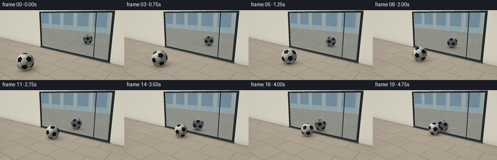
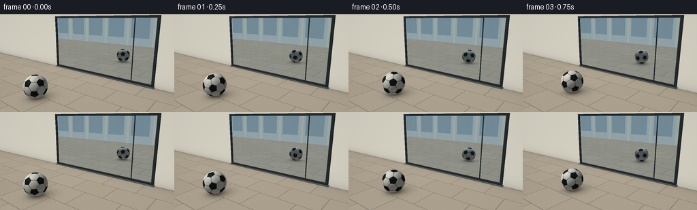

CODING AGENTS AS PIXEL WORLD MODELS
traex/GPT-6.1-Sol · phygen_062
点击播放 · 原生 RGB 像素
此结果可播放，但该运行尚未通过最终提交审核。页面展示不代表评测通过。
逐轮保存的候选
回放视频、检查图与代码变化。
每份候选均可单独播放。实际图片检查记录在下方工具轨迹中。
候选 01播放与检查图
点击播放 · 原生 RGB 像素


展开代码变化
--- 上一保存版本
+++ 本次保存版本
@@ -0,0 +1,235 @@
+from pathlib import Path
+import json
+import numpy as np
+from PIL import Image
+from scipy.spatial import ConvexHull
+import artifact_io
+
+ROOT = Path(__file__).resolve().parent
+SPEC = json.loads((ROOT / 'task_spec.json').read_text())
+W,H = SPEC['width'],SPEC['height']
+SS=3
+w,h=W*SS,H*SS
+R=.52
+CAM=np.array([5.5,-8.5,3.4],dtype=float)
+TARGET=np.array([0.,-1.4,1.1])
+F=255.*SS
+forward=TARGET-CAM;forward/=np.linalg.norm(forward)
+right=np.cross(forward,[0,0,1.]);right/=np.linalg.norm(right)
+up=np.cross(right,forward)
+xx,yy=np.meshgrid(np.arange(w)+.5,np.arange(h)+.5)
+D=forward+((xx-w/2)/F)[...,None]*right-((yy-h/2)/F)[...,None]*up
+D/=np.linalg.norm(D,axis=-1,keepdims=True)
+O=np.broadcast_to(CAM,D.shape)
+LIGHT=np.array([-3.5,-4.5,8.]);LIGHT/=np.linalg.norm(LIGHT)
+
+# The 32 leather panels of a truncated icosahedron, radially mapped to a sphere.
+phi=(1+np.sqrt(5))/2
+V=[]
+for a in [-1,1]:
+ for b in [-phi,phi]:
+ V.extend([[0,a,b],[a,b,0],[b,0,a]])
+V=np.array(V,dtype=float)
+edges=np.linalg.norm(V[:,None]-V[None,:],axis=-1)
+adj=(edges>1e-6)&(edges<2.01)
+faces=[]
+for i in range(12):
+ faces.append((np.array([(2*V[i]+V[j])/3 for j in np.where(adj[i])[0]]),True))
+for inds in ConvexHull(V).simplices:
+ a,b,c=inds
+ faces.append((np.array([(2*V[a]+V[b])/3,(2*V[b]+V[a])/3,(2*V[b]+V[c])/3,(2*V[c]+V[b])/3,(2*V[c]+V[a])/3,(2*V[a]+V[c])/3]),False))
+N=[];DIST=[];BLACK=[];EDGEN=[]
+for verts,black in faces:
+ n=verts.mean(axis=0);n/=np.linalg.norm(n)
+ u=verts[0]-verts.mean(axis=0);u/=np.linalg.norm(u)
+ v=np.cross(n,u)
+ angle=np.arctan2(verts@v,verts@u)
+ verts=verts[np.argsort(angle)]
+ dist=np.dot(verts[0],n)
+ verts=verts/np.linalg.norm(verts,axis=1,keepdims=True)
+ ens=np.cross(verts,np.roll(verts,-1,axis=0));ens/=np.linalg.norm(ens,axis=1,keepdims=True)
+ ens*=np.sign(ens@n)[:,None]
+ if len(ens)==5: ens=np.concatenate([ens,ens[:1]])
+ N.append(n);DIST.append(dist);BLACK.append(black);EDGEN.append(ens)
+N=np.array(N);DIST=np.array(DIST);BLACK=np.array(BLACK);EDGEN=np.array(EDGEN)
+# A fixed initial orientation prevents a pentagon being locked at the pole.
+a=.43;b=.21
+RX=np.array([[1,0,0],[0,np.cos(a),-np.sin(a)],[0,np.sin(a),np.cos(a)]])
+RZ=np.array([[np.cos(b),-np.sin(b),0],[np.sin(b),np.cos(b),0],[0,0,1]])
+INITIAL=RX@RZ
+
+def sky(d):
+ t=np.clip(d[...,2]*1.8+.35,0,1)
+ out=np.array([157.,174.,178.])*(1-t[...,None])+np.array([118.,154.,182.])*t[...,None]
+ # Soft distant environment, with no distracting moving elements.
+ out+=8*np.exp(-((d[...,0]+.35)**2+(d[...,2]-.22)**2)/.1)[...,None]
+ return out
+
+def floor_base(p):
+ x,y=p[...,0],p[...,1]
+ # Large, staggered limestone pavers with thin mortar joints.
+ row=np.floor(y/1.35)
+ tx=(x+((row.astype(np.int64)%2)*.92))/1.84
+ ty=y/1.35
+ fx=tx-np.floor(tx);fy=ty-np.floor(ty)
+ joint=np.minimum(np.minimum(fx,1-fx)*1.84,np.minimum(fy,1-fy)*1.35)
+ mortar=np.clip((.017-joint)/.012,0,1)
+ tile=.5*np.sin(np.floor(tx)*9.87+row*3.41)+.5*np.cos(row*11.4-np.floor(tx)*5.71)
+ noise=np.sin(x*81+y*57)*np.sin(y*92-x*31)+.55*np.sin(x*17+y*25)
+ col=np.empty(p.shape)
+ col[:]=[174.,163.,144.]
+ col+=(tile*3+noise*.9)[...,None]
+ col=col*(1-mortar[...,None]) + np.array([120.,115.,105.])*mortar[...,None]
+ # Wall-foot ambient occlusion and a brighter foreground terrace.
+ ao=1-.13*np.exp(-np.abs(y)/.24)
+ col*=ao[...,None]
+ return col
+
+def wall_base(p):
+ noise=np.sin(p[...,0]*141+p[...,2]*96)*np.sin(p[...,2]*78-p[...,0]*79)
+ col=np.empty(p.shape);col[:]=[211.,207.,193.]
+ col+=noise[...,None]*1.2
+ col*= (1-.12*np.exp(-np.abs(p[...,2])/.22))[...,None]
+ return col
+
+# Cache ray intersections for the static architectural scene.
+def setup(o,d,reflected=False):
+ shape=d.shape[:-1]
+ tz=np.divide(-o[...,2],d[...,2],out=np.full(shape,np.inf),where=d[...,2]<-1e-8)
+ tz=np.where(tz>0,tz,np.inf)
+ ty=np.divide(.035-o[...,1],d[...,1],out=np.full(shape,np.inf),where=d[...,1]>1e-8)
+ ty=np.where(ty>0,ty,np.inf)
+ t=np.minimum(tz,ty)
+ pts=o+d*np.where(np.isfinite(t),t,0)[...,None]
+ ground=(tz<ty)&np.isfinite(tz)
+ wall=(ty<=tz)&np.isfinite(ty)
+ base=sky(d)
+ if np.any(ground):base[ground]=floor_base(pts[ground])
+ if np.any(wall):base[wall]=wall_base(pts[wall])
+ # In the reflection, a softly rendered opposite facade gives the glass depth.
+ if reflected:
+ tb=np.divide(-13.-o[...,1],d[...,1],out=np.full(shape,np.inf),where=d[...,1]<-1e-8)
+ pp=o+d*np.where(np.isfinite(tb),tb,0)[...,None]
+ hit=(tb>0)&(tb<t)&(pp[...,2]>0)&(pp[...,2]<5.5)
+ if np.any(hit):
+ pos=pp[hit];fac=np.broadcast_to(np.array([175.,184.,181.]),pos.shape).copy()
+ pillars=np.minimum(np.mod(pos[:,0]+1,3.4),3.4-np.mod(pos[:,0]+1,3.4))<.16
+ win=(np.mod(pos[:,0]+1,3.4)>.45)&(np.mod(pos[:,0]+1,3.4)<2.85)&(pos[:,2]>1.0)&(pos[:,2]<4.8)
+ fac[pillars]=[193,193,177];fac[win]=[137,157,163]
+ base[hit]=fac;t[hit]=tb[hit];ground[hit]=False;pts[hit]=pp[hit]
+ return dict(o=o,d=d,t=t,p=pts,ground=ground,base=base)
+
+MAIN=setup(O,D)
+tglass=np.divide(-CAM[1],D[...,1],out=np.full((h,w),np.inf),where=D[...,1]>0)
+PG=O+D*tglass[...,None]
+glass=(tglass>0)&(PG[...,0]>-3.72)&(PG[...,0]<3.08)&(PG[...,2]>.10)&(PG[...,2]<3.48)&(tglass<MAIN['t'])
+RD=D.copy();RD[...,1]*=-1
+RO=PG+RD*.0001
+REF=setup(RO,RD,True)
+
+# Slim charcoal aluminium frame, realistically lit bevels and a sill.
+boxes=[([-3.80,-.095,.04],[-3.68,.035,3.57]),([3.04,-.095,.04],[3.16,.035,3.57]),([-3.8,-.095,3.45],[3.16,.035,3.57]),([-3.8,-.105,.04],[3.16,.035,.16]),([1.92,-.035,.13],[1.965,.025,3.47]),([-3.85,-.18,.015],[3.21,.11,.067])]
+FT=np.full((h,w),np.inf);FC=np.zeros((h,w,3))
+for k,(lo,hi) in enumerate(boxes):
+ lo=np.array(lo);hi=np.array(hi)
+ ta=(lo-O)/D;tb=(hi-O)/D
+ near=np.minimum(ta,tb);far=np.maximum(ta,tb)
+ tn=near.max(axis=-1);tf=far.min(axis=-1)
+ hit=(tf>=tn)&(tn>0)&(tn<FT)
+ axis=np.argmax(near,axis=-1)
+ normals=np.zeros_like(D)
+ for j in range(3):normals[...,j]=np.where(axis==j,-np.sign(D[...,j]),0)
+ shade=.66+.34*np.maximum(0,normals@LIGHT)
+ c=np.array([43.,50.,53.]) if k!=5 else np.array([98.,103.,99.])
+ FC[hit]=(c*shade[...,None])[hit];FT[hit]=tn[hit]
+
+
+def shadow(cache,center):
+ color=cache['base'].copy();g=cache['ground'];p=cache['p'][g]
+ dx=p[:,0]-center[0];dy=p[:,1]-center[1]
+ contact=np.exp(-((dx/.45)**2+(dy/.45)**2)*2.0)
+ # Broad penumbra from a large sky source, offset away from sunlight.
+ sx=center[0]-LIGHT[0]/LIGHT[2]*R*.63
+ sy=center[1]-LIGHT[1]/LIGHT[2]*R*.63
+ broad=np.exp(-(((p[:,0]-sx)/.64)**2+((p[:,1]-sy)/.73)**2)*1.55)
+ shade=np.clip(1-.48*contact-.23*broad,.29,1)
+ color[g]*=shade[:,None]
+ return color
+
+def ball(cache,center,angle):
+ o,d=cache['o'],cache['d']
+ oc=o-center
+ b=np.sum(oc*d,axis=-1)
+ c=np.sum(oc*oc,axis=-1)-R*R
+ det=b*b-c
+ tt=-b-np.sqrt(np.maximum(det,0))
+ hit=(det>0)&(tt>1e-4)&(tt<cache['t'])
+ if not np.any(hit):return hit,np.empty((0,3)),tt
+ ray=d[hit];norm=(o[hit]+ray*tt[hit,None]-center)/R
+ ca,sa=np.cos(angle),np.sin(angle)
+ rot=np.array([[1,0,0],[0,ca,-sa],[0,sa,ca]])@INITIAL
+ local=norm@rot
+ which=np.argmax(local@(N/DIST[:,None]).T,axis=-1)
+ side=np.einsum('nij,nj->ni',EDGEN[which],local).min(axis=1)
+ seam=1-np.clip((side-.004)/.014,0,1)
+ black=BLACK[which]
+ base=np.broadcast_to(np.array([225.,224.,212.]),norm.shape).copy()
+ base[black]=[24.,29.,30.]
+ # Fine synthetic leather grain, subtly present rather than a flat icon.
+ grain=np.sin(local[:,0]*255+local[:,2]*51)*np.sin(local[:,1]*233-local[:,2]*85)
+ base+=grain[:,None]*1.3
+ base=base*(1-seam[:,None]) + np.array([51.,54.,51.])*seam[:,None]
+ diffuse=np.maximum(0,norm@LIGHT)
+ shade=.40+.61*diffuse
+ # Warmer floor bounce below and broad, restrained highlights.
+ shade+=.05*np.maximum(-norm[:,2],0)
+ col=base*shade[:,None]
+ half=LIGHT-ray;half/=np.linalg.norm(half,axis=-1,keepdims=True)
+ spec=np.maximum(0,np.sum(norm*half,axis=1))**31
+ col+=spec[:,None]*np.where(black,19.,13.)[:,None]
+ col+=np.array([5.,3.,.5])*np.maximum(-norm[:,2],0)[:,None]
+ return hit,col,tt
+
+frames=[]
+for i in range(SPEC['frames']):
+ t=i/SPEC['fps']
+ duration=(SPEC['frames']-1)/SPEC['fps']
+ distance=1.09*t-.5*((1.09*duration-3.65)*2/duration**2)*t*t
+ center=np.array([-.65,-4.25+distance,R])
+ angle=-distance/R
+ out=shadow(MAIN,center)
+ reflection=shadow(REF,center)
+ rh,rc,rt=ball(REF,center,angle)
+ reflection[rh]=rc
+ # Cool silver-blue specular reflection over a dark interior layer.
+ interior=np.empty_like(out);interior[:]=[55.,67.,70.]
+ # Very restrained vertical curtain folds, visible in the glass tint only.
+ fold=3.0*np.sin(PG[...,0]*10.0)+1.1*np.sin(PG[...,0]*23.0)
+ interior+=fold[...,None]
+ refl=reflection*np.array([.91,.965,1.015])
+ glass_col=.86*refl+.14*interior
+ # Narrow, faint highlights read as glass without obscuring the football.
+ streak=np.exp(-((PG[...,0]+2.95)/.034)**2)*2.3
+ glass_col+=streak[...,None]*np.array([1.,1.2,1.3])
+ out[glass]=glass_col[glass]
+ frame_mask=(FT<MAIN['t'])&((FT<tglass)|(~glass))
+ out[frame_mask]=FC[frame_mask]
+ bh,bc,bt=ball(MAIN,center,angle)
+ bh&=(bt<FT)&((bt<tglass)|(~glass))
+ # Recompute the compact color selection after possible frame occlusion.
+ orig,colors,_=ball(MAIN,center,angle)
+ compact=bh[orig]
+ out[bh]=colors[compact]
+ # A mild optical vignette keeps the frame natural and highlights the action.
+ vignette=1-.055*((xx-w*.51)/(w*.72))**2-.035*((yy-h*.51)/(h*.85))**2
+ out*=vignette[...,None]
+ image=Image.fromarray(np.uint8(np.clip(out,0,255))).resize((W,H),Image.Resampling.LANCZOS)
+ frames.append(np.asarray(image))
+ print(f'frame {i+1}/{SPEC["frames"]}',flush=True)
+artifact_io.save(np.stack(frames),ROOT)
+# Also provide a conventional RGB-video file for convenience.
+try:
+ import imageio.v2 as imageio
+ imageio.mimwrite(ROOT/'video.mp4',frames,fps=SPEC['fps'],codec='libx264',quality=9,macro_block_size=1)
+except (ImportError,RuntimeError):
+ pass
可观测工具轨迹
实际执行的命令与返回图片。
命令 1exit 0
/bin/bash -lc "ls -la && cat prompt.txt && printf '\\n---RULES---\\n' && cat GENERATION_RULES.md && printf '\\n---SPEC---\\n' && cat task_spec.json"
命令 2exit 0
/bin/bash -lc "cat artifact_io.py && printf '\\n---AVAILABLE---\\n' && python - <<'PY'
import numpy, PIL
print('numpy',numpy.__version__)
print('PIL', PIL.__version__)
PY"命令 3exit 0
/bin/bash -lc "python - <<'PY' import importlib.util for m in ['scipy','imageio','imageio_ffmpeg']: print(m, bool(importlib.util.find_spec(m))) PY"
命令 4exit 0
/bin/bash -lc "python - <<'PY' import numpy as np cam=np.array([4.2,-8.5,3.1]); target=np.array([0,-1.4,1.2]);f=250 fw=(target-cam);fw/=np.linalg.norm(fw);rt=np.cross(fw,[0,0,1]);rt/=np.linalg.norm(rt);up=np.cross(rt,fw) for p in [[-.5,-4.4,.5],[-.5,-.65,.5],[-.5,4.4,.5],[-.5,.65,.5],[-3,0,0],[3,0,0],[-3,0,3],[3,0,3]]: a=np.array(p)-cam print(p,(128+f*np.dot(a,rt)/np.dot(a,fw),72-f*np.dot(a,up)/np.dot(a,fw)), 'r',f*.5/np.dot(a,fw)) PY"
命令 5exit 0
/bin/bash -lc "python - <<'PY' import numpy as np for c in [[5.5,-8.5,3.4],[6.6,-7.7,3.3]]: cam=np.array(c); target=np.array([0,-1.4,1.1]);f=255;fw=target-cam;fw/=np.linalg.norm(fw);rt=np.cross(fw,[0,0,1]);rt/=np.linalg.norm(rt);up=np.cross(rt,fw) print(c) for p in [[-.5,-4.0,.5],[-.5,-.7,.5],[-.5,4.,.5],[-.5,.7,.5],[-3.6,0,0],[3,0,0],[-3.6,0,3.4],[3,0,3.4]]: a=np.array(p)-cam;dep=np.dot(a,fw) print(p,np.round([128+f*np.dot(a,rt)/dep,72-f*np.dot(a,up)/dep,f*.5/dep],1)) PY"
命令 6exit 0
/bin/bash -lc "cat > generate.py <<'PY'
from pathlib import Path
import json
import numpy as np
from PIL import Image
from scipy.spatial import ConvexHull
import artifact_io
ROOT = Path(__file__).resolve().parent
SPEC = json.loads((ROOT / 'task_spec.json').read_text())
W,H = SPEC['width'],SPEC['height']
SS=3
w,h=W*SS,H*SS
R=.52
CAM=np.array([5.5,-8.5,3.4],dtype=float)
TARGET=np.array([0.,-1.4,1.1])
F=255.*SS
forward=TARGET-CAM;forward/=np.linalg.norm(forward)
right=np.cross(forward,[0,0,1.]);right/=np.linalg.norm(right)
up=np.cross(right,forward)
xx,yy=np.meshgrid(np.arange(w)+.5,np.arange(h)+.5)
D=forward+((xx-w/2)/F)[...,None]*right-((yy-h/2)/F)[...,None]*up
D/=np.linalg.norm(D,axis=-1,keepdims=True)
O=np.broadcast_to(CAM,D.shape)
LIGHT=np.array([-3.5,-4.5,8.]);LIGHT/=np.linalg.norm(LIGHT)
# The 32 leather panels of a truncated icosahedron, radially mapped to a sphere.
phi=(1+np.sqrt(5))/2
V=[]
for a in [-1,1]:
for b in [-phi,phi]:
V.extend([[0,a,b],[a,b,0],[b,0,a]])
V=np.array(V,dtype=float)
edges=np.linalg.norm(V[:,None]-V[None,:],axis=-1)
adj=(edges>1e-6)&(edges<2.01)
faces=[]
for i in range(12):
faces.append((np.array([(2*V[i]+V[j])/3 for j in np.where(adj[i])[0]]),True))
for inds in ConvexHull(V).simplices:
a,b,c=inds
faces.append((np.array([(2*V[a]+V[b])/3,(2*V[b]+V[a])/3,(2*V[b]+V[c])/3,(2*V[c]+V[b])/3,(2*V[c]+V[a])/3,(2*V[a]+V[c])/3]),False))
N=[];DIST=[];BLACK=[];EDGEN=[]
for verts,black in faces:
n=verts.mean(axis=0);n/=np.linalg.norm(n)
u=verts[0]-verts.mean(axis=0);u/=np.linalg.norm(u)
v=np.cross(n,u)
angle=np.arctan2(verts@v,verts@u)
verts=verts[np.argsort(angle)]
dist=np.dot(verts[0],n)
verts=verts/np.linalg.norm(verts,axis=1,keepdims=True)
ens=np.cross(verts,np.roll(verts,-1,axis=0));ens/=np.linalg.norm(ens,axis=1,keepdims=True)
ens*=np.sign(ens@n)[:,None]
if len(ens)==5: ens=np.concatenate([ens,ens[:1]])
N.append(n);DIST.append(dist);BLACK.append(black);EDGEN.append(ens)
N=np.array(N);DIST=np.array(DIST);BLACK=np.array(BLACK);EDGEN=np.array(EDGEN)
# A fixed initial orientation prevents a pentagon being locked at the pole.
a=.43;b=.21
RX=np.array([[1,0,0],[0,np.cos(a),-np.sin(a)],[0,np.sin(a),np.cos(a)]])
RZ=np.array([[np.cos(b),-np.sin(b),0],[np.sin(b),np.cos(b),0],[0,0,1]])
INITIAL=RX@RZ
def sky(d):
t=np.clip(d[...,2]*1.8+.35,0,1)
out=np.array([157.,174.,178.])*(1-t[...,None])+np.array([118.,154.,182.])*t[...,None]
# Soft distant environment, with no distracting moving elements.
out+=8*np.exp(-((d[...,0]+.35)**2+(d[...,2]-.22)**2)/.1)[...,None]
return out
def floor_base(p):
x,y=p[...,0],p[...,1]
# Large, staggered limestone pavers with thin mortar joints.
row=np.floor(y/1.35)
tx=(x+((row.astype(np.int64)%2)*.92))/1.84
ty=y/1.35
fx=tx-np.floor(tx);fy=ty-np.floor(ty)
joint=np.minimum(np.minimum(fx,1-fx)*1.84,np.minimum(fy,1-fy)*1.35)
mortar=np.clip((.017-joint)/.012,0,1)
tile=.5*np.sin(np.floor(tx)*9.87+row*3.41)+.5*np.cos(row*11.4-np.floor(tx)*5.71)
noise=np.sin(x*81+y*57)*np.sin(y*92-x*31)+.55*np.sin(x*17+y*25)
col=np.empty(p.shape)
col[:]=[174.,163.,144.]
col+=(tile*3+noise*.9)[...,None]
col=col*(1-mortar[...,None]) + np.array([120.,115.,105.])*mortar[...,None]
# Wall-foot ambient occlusion and a brighter foreground terrace.
ao=1-.13*np.exp(-np.abs(y)/.24)
col*=ao[...,None]
return col
def wall_base(p):
noise=np.sin(p[...,0]*141+p[...,2]*96)*np.sin(p[...,2]*78-p[...,0]*79)
col=np.empty(p.shape);col[:]=[211.,207.,193.]
col+=noise[...,None]*1.2
col*= (1-.12*np.exp(-np.abs(p[...,2])/.22))[...,None]
return col
# Cache ray intersections for the static architectural scene.
def setup(o,d,reflected=False):
shape=d.shape[:-1]
tz=np.divide(-o[...,2],d[...,2],out=np.full(shape,np.inf),where=d[...,2]<-1e-8)
tz=np.where(tz>0,tz,np.inf)
ty=np.divide(.035-o[...,1],d[...,1],out=np.full(shape,np.inf),where=d[...,1]>1e-8)
ty=np.where(ty>0,ty,np.inf)
t=np.minimum(tz,ty)
pts=o+d*np.where(np.isfinite(t),t,0)[...,None]
ground=(tz<ty)&np.isfinite(tz)
wall=(ty<=tz)&np.isfinite(ty)
base=sky(d)
if np.any(ground):base[ground]=floor_base(pts[ground])
if np.any(wall):base[wall]=wall_base(pts[wall])
# In the reflection, a softly rendered opposite facade gives the glass depth.
if reflected:
tb=np.divide(-13.-o[...,1],d[...,1],out=np.full(shape,np.inf),where=d[...,1]<-1e-8)
pp=o+d*np.where(np.isfinite(tb),tb,0)[...,None]
hit=(tb>0)&(tb<t)&(pp[...,2]>0)&(pp[...,2]<5.5)
if np.any(hit):
pos=pp[hit];fac=np.broadcast_to(np.array([175.,184.,181.]),pos.shape).copy()
pillars=np.minimum(np.mod(pos[:,0]+1,3.4),3.4-np.mod(pos[:,0]+1,3.4))<.16
win=(np.mod(pos[:,0]+1,3.4)>.45)&(np.mod(pos[:,0]+1,3.4)<2.85)&(pos[:,2]>1.0)&(pos[:,2]<4.8)
fac[pillars]=[193,193,177];fac[win]=[137,157,163]
base[hit]=fac;t[hit]=tb[hit];ground[hit]=False;pts[hit]=pp[hit]
return dict(o=o,d=d,t=t,p=pts,ground=ground,base=base)
MAIN=setup(O,D)
tglass=np.divide(-CAM[1],D[...,1],out=np.full((h,w),np.inf),where=D[...,1]>0)
PG=O+D*tglass[...,None]
glass=(tglass>0)&(PG[...,0]>-3.72)&(PG[...,0]<3.08)&(PG[...,2]>.10)&(PG[...,2]<3.48)&(tglass<MAIN['t'])
RD=D.copy();RD[...,1]*=-1
RO=PG+RD*.0001
REF=setup(RO,RD,True)
# Slim charcoal aluminium frame, realistically lit bevels and a sill.
boxes=[([-3.80,-.095,.04],[-3.68,.035,3.57]),([3.04,-.095,.04],[3.16,.035,3.57]),([-3.8,-.095,3.45],[3.16,.035,3.57]),([-3.8,-.105,.04],[3.16,.035,.16]),([1.92,-.035,.13],[1.965,.025,3.47]),([-3.85,-.18,.015],[3.21,.11,.067])]
FT=np.full((h,w),np.inf);FC=np.zeros((h,w,3))
for k,(lo,hi) in enumerate(boxes):
lo=np.array(lo);hi=np.array(hi)
ta=(lo-O)/D;tb=(hi-O)/D
near=np.minimum(ta,tb);far=np.maximum(ta,tb)
tn=near.max(axis=-1);tf=far.min(axis=-1)
hit=(tf>=tn)&(tn>0)&(tn<FT)
axis=np.argmax(near,axis=-1)
normals=np.zeros_like(D)
for j in range(3):normals[...,j]=np.where(axis==j,-np.sign(D[...,j]),0)
shade=.66+.34*np.maximum(0,normals@LIGHT)
c=np.array([43.,50.,53.]) if k"'!=5 else np.array([98.,103.,99.])
FC[hit]=(c*shade[...,None])[hit];FT[hit]=tn[hit]
def shadow(cache,center):
color=cache['"'base'].copy();g=cache['ground'];p=cache['p'][g]
dx=p[:,0]-center[0];dy=p[:,1]-center[1]
contact=np.exp(-((dx/.45)**2+(dy/.45)**2)*2.0)
# Broad penumbra from a large sky source, offset away from sunlight.
sx=center[0]-LIGHT[0]/LIGHT[2]*R*.63
sy=center[1]-LIGHT[1]/LIGHT[2]*R*.63
broad=np.exp(-(((p[:,0]-sx)/.64)**2+((p[:,1]-sy)/.73)**2)*1.55)
shade=np.clip(1-.48*contact-.23*broad,.29,1)
color[g]*=shade[:,None]
return color
def ball(cache,center,angle):
o,d=cache['o'],cache['d']
oc=o-center
b=np.sum(oc*d,axis=-1)
c=np.sum(oc*oc,axis=-1)-R*R
det=b*b-c
tt=-b-np.sqrt(np.maximum(det,0))
hit=(det>0)&(tt>1e-4)&(tt<cache['t'])
if not np.any(hit):return hit,np.empty((0,3)),tt
ray=d[hit];norm=(o[hit]+ray*tt[hit,None]-center)/R
ca,sa=np.cos(angle),np.sin(angle)
rot=np.array([[1,0,0],[0,ca,-sa],[0,sa,ca]])@INITIAL
local=norm@rot
which=np.argmax(local@(N/DIST[:,None]).T,axis=-1)
side=np.einsum('nij,nj->ni',EDGEN[which],local).min(axis=1)
seam=1-np.clip((side-.004)/.014,0,1)
black=BLACK[which]
base=np.broadcast_to(np.array([225.,224.,212.]),norm.shape).copy()
base[black]=[24.,29.,30.]
# Fine synthetic leather grain, subtly present rather than a flat icon.
grain=np.sin(local[:,0]*255+local[:,2]*51)*np.sin(local[:,1]*233-local[:,2]*85)
base+=grain[:,None]*1.3
base=base*(1-seam[:,None]) + np.array([51.,54.,51.])*seam[:,None]
diffuse=np.maximum(0,norm@LIGHT)
shade=.40+.61*diffuse
# Warmer floor bounce below and broad, restrained highlights.
shade+=.05*np.maximum(-norm[:,2],0)
col=base*shade[:,None]
half=LIGHT-ray;half/=np.linalg.norm(half,axis=-1,keepdims=True)
spec=np.maximum(0,np.sum(norm*half,axis=1))**31
col+=spec[:,None]*np.where(black,19.,13.)[:,None]
col+=np.array([5.,3.,.5])*np.maximum(-norm[:,2],0)[:,None]
return hit,col,tt
frames=[]
for i in range(SPEC['frames']):
t=i/SPEC['fps']
duration=(SPEC['frames']-1)/SPEC['fps']
distance=1.09*t-.5*((1.09*duration-3.65)*2/duration**2)*t*t
center=np.array([-.65,-4.25+distance,R])
angle=-distance/R
out=shadow(MAIN,center)
reflection=shadow(REF,center)
rh,rc,rt=ball(REF,center,angle)
reflection[rh]=rc
# Cool silver-blue specular reflection over a dark interior layer.
interior=np.empty_like(out);interior[:]=[55.,67.,70.]
# Very restrained vertical curtain folds, visible in the glass tint only.
fold=3.0*np.sin(PG[...,0]*10.0)+1.1*np.sin(PG[...,0]*23.0)
interior+=fold[...,None]
refl=reflection*np.array([.91,.965,1.015])
glass_col=.86*refl+.14*interior
# Narrow, faint highlights read as glass without obscuring the football.
streak=np.exp(-((PG[...,0]+2.95)/.034)**2)*2.3
glass_col+=streak[...,None]*np.array([1.,1.2,1.3])
out[glass]=glass_col[glass]
frame_mask=(FT<MAIN['t'])&((FT<tglass)|(~glass))
out[frame_mask]=FC[frame_mask]
bh,bc,bt=ball(MAIN,center,angle)
bh&=(bt<FT)&((bt<tglass)|(~glass))
# Recompute the compact color selection after possible frame occlusion.
orig,colors,_=ball(MAIN,center,angle)
compact=bh[orig]
out[bh]=colors[compact]
# A mild optical vignette keeps the frame natural and highlights the action.
vignette=1-.055*((xx-w*.51)/(w*.72))**2-.035*((yy-h*.51)/(h*.85))**2
out*=vignette[...,None]
image=Image.fromarray(np.uint8(np.clip(out,0,255))).resize((W,H),Image.Resampling.LANCZOS)
frames.append(np.asarray(image))
print(f'frame {i+1}/{SPEC[\"frames\"]}',flush=True)
artifact_io.save(np.stack(frames),ROOT)
# Also provide a conventional RGB-video file for convenience.
try:
import imageio.v2 as imageio
imageio.mimwrite(ROOT/'video.mp4',frames,fps=SPEC['fps'],codec='libx264',quality=9,macro_block_size=1)
except (ImportError,RuntimeError):
pass
PY
python generate.py"保存候选 1 份；完成命令 6 次；可验证图片返回 0 张。原始 API 响应与完整日志保留在本地。